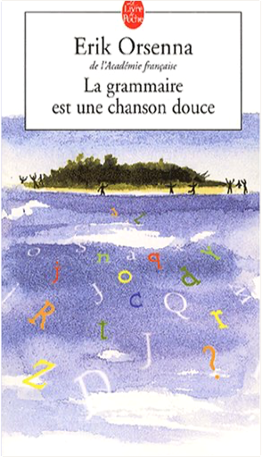

 la grammaire est une chanson douceerik orsenna  Jeanne a dix ans, et un grand-frère, Thomas, âgé de quatorze ans. C'est une rêveuse, douce, qui se laisse emporter par l'imagination, au gré des humeurs, au fil des mots. Avec son frère, elle partage ses petites divagations, encouragées par une maîtresse d'école, fière de pratiquer la langue française, de pouvoir s'amuser avec ses variations, ses nuances, ses complexités. Elle apprend les mots, les place, déplace, les mesure, joue avec. À l'école dans les récitations, au marché parmi les étalages, dans les boutiques, à l'hôpital, au cours de jeux de société comme le Scrabble…  Néo-Tokyo, an 2019. Nous sommes trente-huit ans après la troisième Guerre mondiale. Le grand cataclysme a dévasté la planète. Depuis, le monde a entamé sa reconstruction. La capitale japonaise n'est plus qu'une espèce de gigantesque poubelle high-tech. Une nuit, une bande de jeunes motards fait une rencontre étrange : celle d'un enfant au visage de vieillard, doté de bien curieux pouvoirs. Ils ne le savent pas encore, mais le processus de réveil d'Akira vient de commencer... Sombre vision d'un futur aux allures d'apocalypse, Akira dépeint une société en perdition livrée aux enfants mutants, aux sectes religieuses et aux forces surnaturelles. Avec son sens du mouvement et de la vitesse, le dynamisme de son graphisme et son hyperréalisme, cette saga, entamée en 1982, est l'une des oeuvres majeures de l'histoire des mangas. Elle est née de l'imagination de Katsuhiro Otomo, un auteur qui a largement contribué à faire reconnaître le genre hors des frontières de son pays natal. —Gilbert Jacques |

Julien
Collection Total:
2 016 Items
2 016 Items
Last Updated:
Dec 23, 2023
Dec 23, 2023

 Made with Delicious Library
Made with Delicious Library